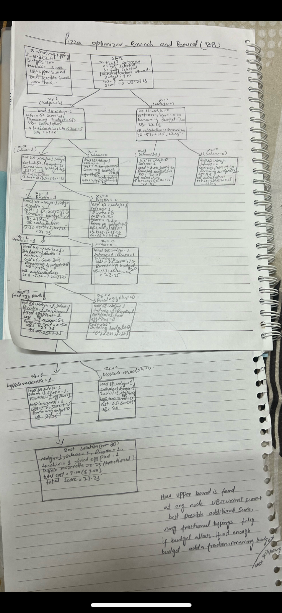

Project 01 — Optimization
Branch & Bound
How do you pick the best pizza toppings on a tight budget — without checking every possible combination?
Section 1
Project Overview
This project grew out of a class assignment where we applied the Branch and Bound (B&B) algorithm to a real optimization problem: choosing pizza toppings that maximize a "deliciousness score" without exceeding a $7 budget.
Branch and Bound is a method for solving integer programming problems — decisions that can only be Yes or No (0 or 1), not fractions. It works by systematically exploring a decision tree, but pruning branches that mathematically cannot beat the best solution found so far. This makes it far faster than brute-force search.
The concept matters because real-world decisions — staffing, routing, resource allocation — are full of yes/no choices with budget constraints. B&B is one of the core tools that makes those problems solvable at scale.
| Topping (xᵢ) | Cost ($) | Score | Score/Cost ratio |
|---|---|---|---|
| Nduja (x₁) | 0.50 | 22.50 | 45.0 |
| Salame (x₂) | 0.50 | 20.00 | 40.0 |
| Ricotta (x₃) | 3.50 | 17.50 | 5.0 |
| Zucchini (x₄) | 1.00 | 20.18 | 20.2 |
| Fried Egg Plant (x₅) | 1.00 | 5.20 | 5.2 |
| Buffalo Mozzarella (x₆) | 0.65 | 5.00 | 7.7 |
Budget: $7.00 · Goal: maximize total score · All toppings are binary (include or not)
Section 2
Interactive Demo
Adjust the budget and step through the Branch & Bound tree node by node. Watch how the algorithm explores branches, calculates upper bounds, and prunes dead ends — arriving at the optimal pizza without checking every combination.
Pizza B&B Solver
Step-by-stepSection 3
Evidence
Below is my original handwritten B&B tree from the assignment, alongside the key data extracted from each node of the tree.


| Node | Decision | Cost ($) | Score | Upper Bound | Status |
|---|---|---|---|---|---|
| Root | Start (fractional UB) | 0.00 | 0 | 27.25 | — |
| L1-A | Nduja = 1 | 0.50 | 22.50 | 27.25 | Explore |
| L1-B | Nduja = 0 | 0.00 | 0 | 22.45 | Explore |
| L2-A | Salame = 1 | 1.00 | 42.50 | 27.25 | Explore |
| L3-A | Ricotta = 1 | 4.50 | 60.00 | 27.25 | Explore |
| L4-A | Zucchini = 1 | 5.50 | 80.18 | 27.25 | Explore |
| L5-A (Leaf) | Fried Egg Plant = 1 | 6.50 | 5.20 | — | BEST: 27.25 |
| L5-B | Fried Egg Plant = 0, Buffalo = 0.25 | 6.50 | ~27.10 | 27.10 | Pruned |
| Final | Nduja=1, Salame=1, Ricotta=1, Zucchini=1, Fried Egg Plant=1, Buffalo=0 | 7.00 | 27.23 | — | Optimal |
Section 4
What Did I Learn?
Knowledge
Branch and Bound solves integer programs by splitting decisions into a binary tree, calculating upper bounds at each node, and discarding branches that can't improve on the best solution found so far.
Skills
Building and traversing decision trees by hand; computing fractional upper bounds (LP relaxation); applying pruning logic; connecting a math concept to a tangible real-world problem.
What Was Difficult
Keeping track of remaining budget and re-calculating the upper bound at every node without errors. The tree grows fast — it was easy to lose track of which branch I was on.
What Surprised Me
How few nodes actually need to be explored. Pruning cuts off huge chunks of the tree early — B&B finds the optimal answer much faster than I expected compared to brute force.
Real-World Application
Airline crew scheduling, factory production planning, delivery routing — any problem with yes/no decisions and a resource constraint uses techniques like this. It's one of the most practically important algorithms in operations research.